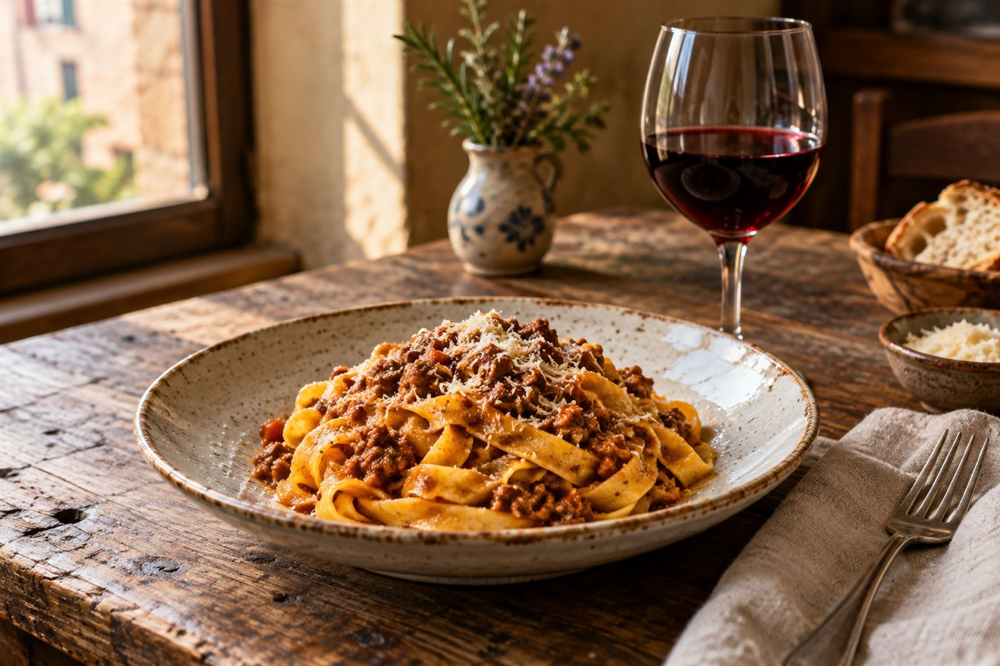
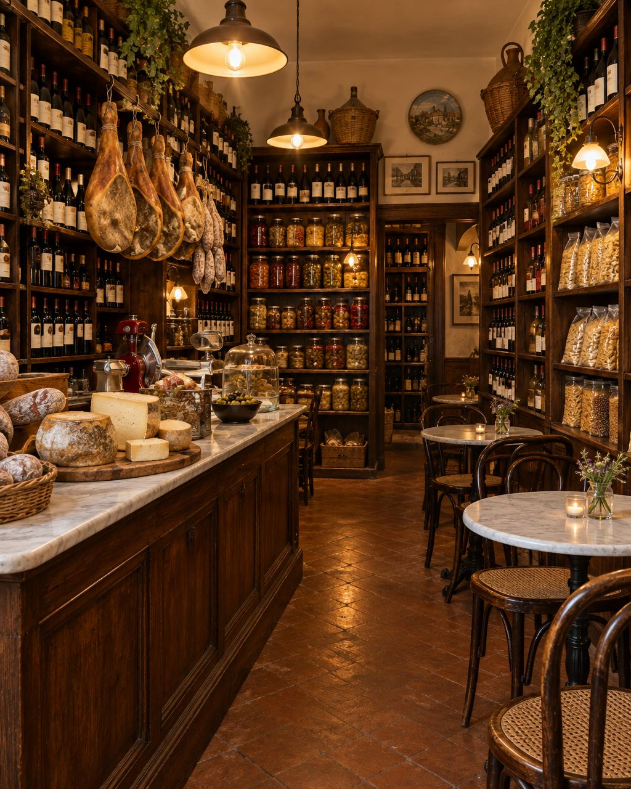

Tagliatelle al ragù
Il piatto simbolo di Bologna, con il ragù della tradizione.
PrimiBistrot, enoteca e bottega di quartiere
Tagliatelle al ragù, lasagne verdi, tortellini e taglieri di salumi e formaggi artigianali, con un bicchiere di vino italiano o biologico. La cucina di casa emiliana, in una bottega a conduzione familiare.
Posti a sedere limitati: meglio prenotare.


La storia
La Vecchia Bottega nasce da un'idea di Roberto: ricreare le vecchie botteghe di paese, dove si mangiava, si comprava il vino e si portava a casa qualcosa di buono.
Per questo qui convivono tre anime: la trattoria della tradizione, la salumeria e la drogheria. Tutto a conduzione familiare, nel cuore della Bolognina.
“La mia è una famiglia di ristoratori e la nostra storia inizia nel 1957 nell'Appennino bolognese, a Monterenzio.”Roberto, La Vecchia Bottega
Bottega ed enoteca
Non solo tavola: alla Vecchia Bottega trovi anche una scelta di vini e prodotti da portare via.
Orari e dove siamo
| Lunedì | Chiuso |
| Martedì | 12:00–15:00 · 18:00–24:00 |
| Mercoledì | 12:00–15:00 · 18:00–24:00 |
| Giovedì | 12:00–15:00 · 18:00–24:00 |
| Venerdì | 12:00–15:00 · 18:00–24:00 |
| Sabato | 12:00–15:00 · 18:00–24:00 |
| Domenica | Chiuso |
Gli orari possono variare (ad esempio per le ferie estive): in caso di dubbio, scrivici prima di passare.
Domande frequenti
È consigliato: i posti a sedere sono pochi. Puoi prenotare con un messaggio su WhatsApp o chiamando il +39 347 197 7300.
Sì, in carta ci sono opzioni vegetariane, come i tortelloni alla zucca.
Sì, i piatti sono disponibili anche da asporto, così come vini e prodotti della bottega.
Da martedì a sabato, a pranzo dalle 12:00 alle 15:00 e a cena dalle 18:00 alle 24:00. Lunedì e domenica siamo chiusi, salvo variazioni.
Siamo in Bolognina, in Via Luigi Serra 1A, a due passi dalla stazione di Bologna Centrale.
Scrivici su WhatsApp o chiamaci per sapere se c'è posto.